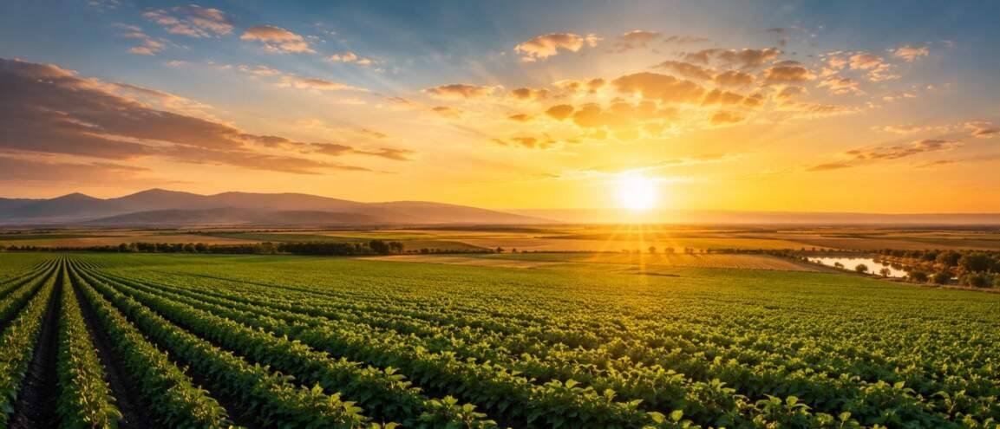
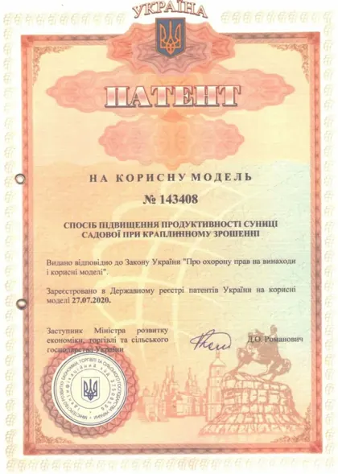

Гумусообразование ускоряется, поэтому в тяжелых и слитых почвах улучшаются аэрация и удержание влаги, а урожайность растет.

Органические удобрения для каждой культуры
От пшеницы и картофеля до орхидей и газона. Выберите культуру и узнайте, как и сколько вносить.
Продукция
Весь каталог списком →ЗерновыеДля полейВсе 4

Удобрения для гречихи
Линейки: GRAY

Удобрения для кукурузы
Линейки: RED, GRAY, BROWN, BLACK

Удобрения для пшеницы
Линейки: BLACK, GRAY

Удобрения для ячменя
Линейки: RED, GRAY, BROWN
ЗернобобовыеДля полейВсе 2
Технические культурыДля полейВсе 3

Удобрения для конопли
Линейки: GRAY

Удобрения для подсолнечника
Линейки: BLACK, GRAY

Удобрения для сахарной свеклы
Линейки: GRAY
Овощи и бахчевыеДля сада и огородаВсе 13

GREENODIN GRAY
Удобрение для баклажанов
Органическое гранулированное удобрение GREENODIN GRAY для баклажанов в открытом грунте и теплицах.

GREENODIN GRAY
Удобрение для острого перца
Удобрение GREENODIN GRAY для острого перца.

GREENODIN GRAY
Удобрение для арбуза
Органическое гранулированное удобрение GREENODIN GRAY для арбузов.

GREENODIN GRAY
Удобрение для капусты
Гранулированное органическое удобрение GREENODIN GRAY для капусты.

GREENODIN GRAY
Удобрение для картофеля
Удобрение GREENODIN GRAY для картофеля: 25 г под куст или на 1 м² при посадке, со второго года норму уменьшают…

GREENODIN GRAY
Удобрение для моркови
Органическое удобрение GREENODIN GRAY для моркови.

GREENODIN GRAY
Удобрение для огурцов
Удобрение GREENODIN GRAY для огурцов в открытом грунте и теплицах.

GREENODIN GRAY
Удобрение для перца
Органическое гранулированное удобрение GREENODIN GRAY для сладкого перца.

GREENODIN GRAY
Удобрение для томатов
Комплексное органическое удобрение GREENODIN GRAY для томатов в открытом грунте и теплицах.

GREENODIN GRAY
Удобрение для редиса
Органическое гранулированное удобрение GREENODIN GRAY для редиса.

GREENODIN GRAY
Удобрение для столовой свеклы
Удобрение GREENODIN GRAY для столовой свеклы.

GREENODIN GRAY
Удобрение для лука
Органическое удобрение GREENODIN GRAY для репчатого лука.

GREENODIN GRAY
Удобрение для чеснока
Удобрение GREENODIN GRAY для озимого и ярового чеснока.
Ягоды и виноградДля сада и огородаВсе 5

GREENODIN GRAY
Удобрение для винограда
Удобрение GREENODIN GRAY для винограда: 25 г на 1 м² (250 кг/га) по площади или под куст, с ежегодным снижением…

GREENODIN BROWN
Удобрение для голубики
Органическое удобрение GREENODIN BROWN для голубики.

GREENODIN BROWN
Удобрение для малины
Удобрение GREENODIN BROWN для малины.

GREENODIN BROWN
Удобрение для клубники
Гранулированное органическое удобрение GREENODIN BROWN для клубники.

GREENODIN BLACK
Удобрение для смородины
Удобрение GREENODIN BLACK для смородины.
Плодовые деревьяДля сада и огородаВсе 5

GREENODIN GRAY
Удобрение для абрикоса
Органическое удобрение GREENODIN GRAY для абрикоса.

GREENODIN BROWN
Удобрение для груши
Удобрение GREENODIN BROWN для груши: при посадке — 25 г на 1 л почвы, для растущих деревьев — от 50 г под…

GREENODIN GRAY
Удобрение для персика
Гранулированное органическое удобрение GREENODIN GRAY для персика.

GREENODIN GRAY
Удобрение для черешни
Органическое удобрение GREENODIN GRAY для черешни.

GREENODIN BROWN
Удобрение для яблони
Удобрение GREENODIN BROWN для яблони: при посадке саженца — 25 г на 1 л почвы, далее — под дерево в зависимости от…
ЦветыДля дома и декораВсе 10

GREENODIN BROWN
Удобрение для азалии
Органическое удобрение GREENODIN BROWN для азалии.

GREENODIN BROWN
Удобрение для бугенвиллеи
Удобрение GREENODIN BROWN для бугенвиллеи: 25 г на 1 л субстрата для подкисления почвосмеси.

GREENODIN BROWN
Удобрение для гортензий
Органическое удобрение GREENODIN BROWN для гортензий.

GREENODIN BROWN
Удобрение для орхидей
Удобрение GREENODIN BROWN для орхидей: 25 г на 1 л субстрата при пересадке.

GREENODIN GRAY
Удобрение для пионов
Органическое удобрение GREENODIN GRAY для пионов.

GREENODIN BROWN
Удобрение для спатифиллума
Удобрение GREENODIN BROWN для спатифиллума: 25–30 г на 1 л субстрата при посадке или пересадке.

GREENODIN BROWN
Удобрение для роз
Органическое удобрение GREENODIN BROWN для садовых и комнатных роз.

GREENODIN GRAY
Удобрение для тюльпанов
Удобрение GREENODIN GRAY для тюльпанов.

GREENODIN BROWN
Удобрение для фиалок
Органическое удобрение GREENODIN BROWN для фиалок: 25–30 г на 1 л субстрата при посадке или пересадке.

GREENODIN GRAY
Удобрение для хризантем
Удобрение GREENODIN GRAY для садовых хризантем.
Хвойные, кустарники и газонДля дома и декораВсе 3

GREENODIN GRAY
Удобрение для газона
Гранулированное органическое удобрение GREENODIN GRAY для газона: 25 г на 1 м² (2,5 кг на сотку) дважды в год.

GREENODIN GRAY
Удобрение для самшита
Удобрение GREENODIN GRAY для самшита и живых изгородей из него.

GREENODIN BROWN
Удобрение для хвойных
Органическое удобрение GREENODIN BROWN для хвойных, в том числе туи.
Линейка GREENODINЛинейкаВсе 8

Удобрение GREENODIN White
GREENODIN WHITE — мелиорант на основе силиката калия, трепела, диатомита и леонардита с высокой…

Удобрение GREENODIN Gray
GREENODIN GRAY — рекультивант на основе леонардита и кремнийсодержащих минералов со средним содержанием органики.

Удобрение GREENODIN Brown
GREENODIN BROWN — мелиорант на основе леонардита, диатомита и торфа для подкисления щелочных и нейтральных…

Удобрение GREENODIN Black
GREENODIN BLACK — мелиорант на основе леонардита и диатомита для деградированных, обедненных и загрязненных…

Удобрение GREENODIN Red
GREENODIN RED — мелиорант на основе бурого бентонита, лигнита и кремнийсодержащих минералов для повышения…

Удобрение GREENODIN Melior
GREENODIN MELIOR — мелиорант на основе природного карбоната кальция и кремнезема для раскисления кислых и…

Удобрение GREENODIN Multihumate
GREENODIN MULTIHUMATE — мелиорант на основе лигнита и диатомита, обогащенный полезными бактериями.

Удобрение GREENODIN Microbox
GREENODIN MICROBOX — почвенный субстрат на основе торфа, леонардита и диатомита с полезными микроорганизмами.
О GREENODIN
GREENODIN — органо-минеральное удобрение украинской разработки. Его создал Институт нанотехнологий и органических продуктов «Авелайф» из Винницы. Основа состава — природные компоненты, в том числе глауконит и леонардит. Без синтетической химии.
- Подходит для разных почв и культур
- Отдельный продукт для каждой культуры
- Отчеты испытаний НААН: пшеница, подсолнечник, земляника, чеснок, картофель, соя, кукуруза
- Разработки подтверждены четырьмя патентами Украины
Обычные органические удобрения и другие продукты органического происхождения слабо влияют на почву: их основная задача — питание растения. Комплексные органо-минеральные удобрения GREENODIN одновременно повышают плодородие почвы, улучшают ее агрономические свойства и усиливают жизнеспособность растений.
Органика в продукции GREENODIN играет второстепенную роль. Основа — сочетание природных кремнийсодержащих минералов и органического сырья. Оно создает среду для полезных агрономических микроорганизмов, которые восстанавливают и повышают плодородие почвы. Один компонент усиливает другой, поэтому удобрения действуют долго.
- Восстановление культурного слоя почвы
- Повышение урожайности сельскохозяйственных культур
- Снижение расхода воды на полив
- Сокращение агрохимикатов вплоть до полного отказа от них
- Детоксикация почв
- Длительное и равномерное поступление питательных элементов к растениям
- Стимуляция роста и развития растений
- Повышение устойчивости растений к болезням
- Рекультивация земель
- Переход к органическому земледелию без потерь для производителя за два года
- Повышение рыночной стоимости экологически чистой продукции
Патенты и сертификатыВсе документы
 Патент № 122904Смесь для восстановления и повышения плодородия почвы
Патент № 122904Смесь для восстановления и повышения плодородия почвы Патент № 127109Комплексное органо-минеральное удобрение
Патент № 127109Комплексное органо-минеральное удобрение Патент № 143073Комплексное органо-минеральное удобрение
Патент № 143073Комплексное органо-минеральное удобрение
Патент № 143408Способ повышения продуктивности земляники садовой при капельном орошении Подтверждение № 23-0504-01/02Organic Standard
Подтверждение № 23-0504-01/02Organic Standard Членство НП ООО «Синта»IFOAM — Organics International
Членство НП ООО «Синта»IFOAM — Organics InternationalПочему аграрии выбирают GREENODIN
Быстрее растут и лучше себя чувствуют трава, декоративные растения, сельскохозяйственные культуры и леса.
Влагоудерживающая способность GREENODIN выше средней. Структура почвы улучшается, поэтому потери влаги и питательных веществ меньше.
Нитрификация замедляется, поэтому удобрения используются рациональнее, а ускоренный биосинтез вторичных метаболитов повышает иммунитет растений.
Экологически чистая продукция ценится дороже: только в Европе рынок органических продуктов растет в среднем на 7,5% в год и превышает 45 млрд евро.
Партнерам
Оптом
Поставки для хозяйств и магазинов. Оставьте контакты, и мы свяжемся с вами.
Стать партнером
Для дистрибьюторов и представителей в регионах.
Контакты
- Телефон+38 043 250 90 90
- Почтаoffice@avelife.pro
- АдресВинница, ул. Николая Оводова, 51, корп. 1, 5 этаж